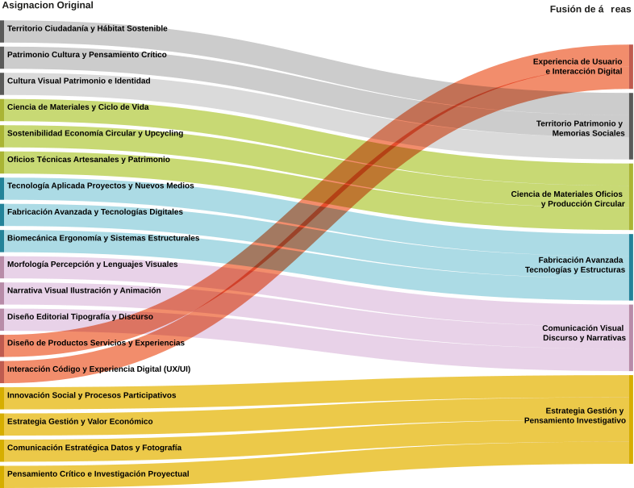
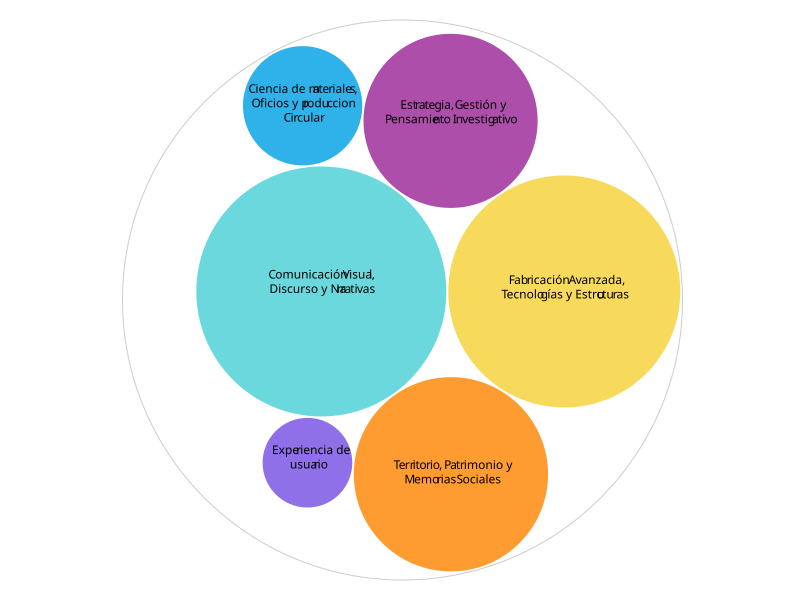

La oferta de electivos dentro de un programa académico no solo responde a una organización curricular interna, sino que debiera dialogar de forma directa con los intereses y necesidades formativas que los estudiantes manifiestan más adelante, en instancias como los proyectos de título. Sin embargo, esta relación rara vez se hace visible: la estructura de la oferta y la demanda real de temáticas suelen analizarse por separado, dificultando una lectura crítica de su coherencia.
El presente análisis, desarrollado en el marco de la asignatura de Diseño y visualización de información, busca precisamente eso: comprobar, a través de un proceso de visualización de datos, si los electivos ofrecidos cumplen su función de respaldar y nutrir los temas que los estudiantes eligen para sus proyectos de título. Para ello, se reorganizó la totalidad de la oferta —146 electivos— en categorías progresivamente más sintéticas, estableciendo así una base comparable que permite cruzar la estructura formativa con la elección efectiva de los estudiantes.
¿La cantidad de electivos ofrecidos está bien distribuida por temática?
En el siguiente gráfico podemos ver la respuesta.
Con el objetivo de identificar patrones y coherencias dentro de la oferta académica, los datos analizados en la asignatura de Diseño y visualización de información permitieron realizar un proceso de síntesis categórica. A partir de los dieciocho subgrupos iniciales de asignaciones, se estructuró una matriz de afinidad conceptual para agrupar los contenidos en áreas transversales más densas y legibles.
Este ejercicio de reducción temática dio origen a un gráfico que articula las asignaturas bajo grandes áreas lógicas dominantes. La reorganización no solo optimiza la legibilidad visual de la actual oferta de electivos, sino que establece la base analítica necesaria para la siguiente etapa del estudio: cruzar y comparar la concentración de estas temáticas formativas con la distribución real de las temáticas elegidas por los estudiantes en sus proyectos de título.
Reducción y sintesis de áreas

Distribución de electivos de diseño
Con el objetivo de identificar patrones y coherencias dentro de la oferta académica, los conocimientos adquiridos en las asignaturas de Diseño y visualización de información permitieron realizar un proceso de síntesis categórica. A partir de la dispersión de los dieciocho subgrupos iniciales de asignaciones, se estructuró una matriz de afinidad conceptual para agrupar las asignaturas en áreas transversales más densas y legibles.
Este ejercicio de reducción temática dio origen a un gráfico que organiza los electivos bajo grandes áreas lógicas dominantes, disminuyendo de forma drástica la sobrecarga cognitiva de la lectura original. Al distribuir el volumen de la oferta en estos macro-grupos, la arquitectura de la visualización se vuelve considerablemente más clara y directa, permitiendo entender de inmediato dónde se concentran las prioridades formativas de las asignaturas.
¿Existirá alguna correlación entre los electivos ofertados y las decisiones de los estudiantes?
Segunda visualización, cantidad de proyectos de titulo relacionados a cada grupo tematico
